前期准备
在没有设备的情况下，VMware虚拟机就是检验编译成果和学习的最好工具，这篇博客记录了我是如何根据官方文档配置虚拟机的
自行编译
如果自己编译的时候在Target Images中勾选了Build VMware images files后，那么在编译输出的文件夹中就能够直接找到vmdk格式的文件，可以直接跳过前期准备
使用img镜像转换
首先安装依赖，我使用的是Ubuntu 19.04
1 | sudo apt-get install qemu-img |
然后从OpenWrt官网上下载镜像文件并解压，这里下载的是openwrt-18.06.4-x86-64-combined-ext4.img.gz
1 | wget https://downloads.openwrt.org/releases/18.06.4/targets/x86/64/openwrt-18.06.4-x86-64-combined-ext4.img.gz |
使用qemu-img将img固件转换为vmdk格式的虚拟机硬盘文件
1 | qemu-img convert -f raw -O vmdk openwrt-18.06.4-x86-64-combined-ext4.img openwrt-18.06.4-x86-64-combined-ext4.vmdk |
创建虚拟机
接下来就是创建一个空白的虚拟机，将vmdk文件添加到该空白虚拟机中
文件->新建虚拟机，选择自定义
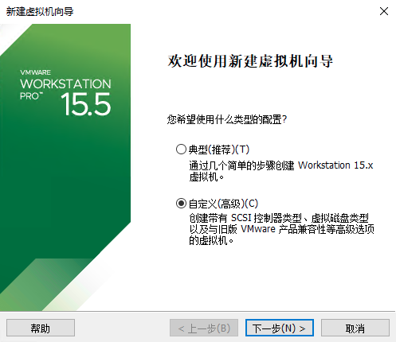
虚拟机硬件兼容性直接默认就好

选择稍后安装操作系统
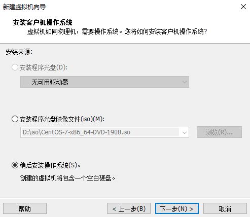
OpenWrt18使用的是Linux4.x的内核，因此操作系统类型选择
其他 Linux 4.x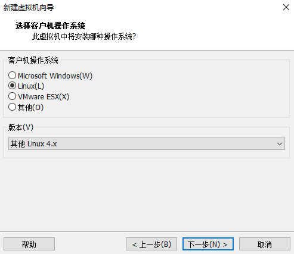
虚拟机的名字，自己起一个喜欢的
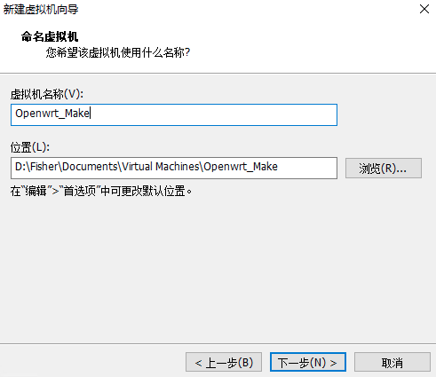
分配处理器，1个处理器1个内核就够了
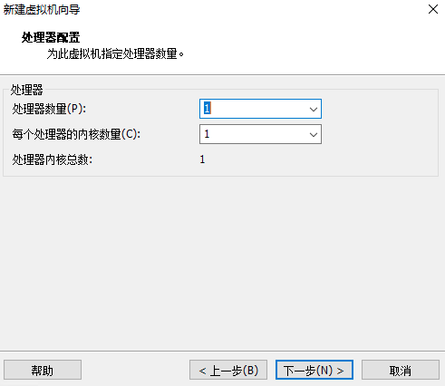
分配内存，256MB就够了
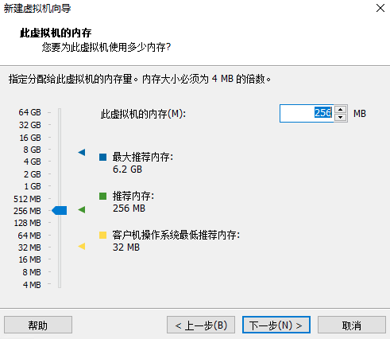
虚拟机的网络连接类型，根据情况选择，我使用的是桥接网络
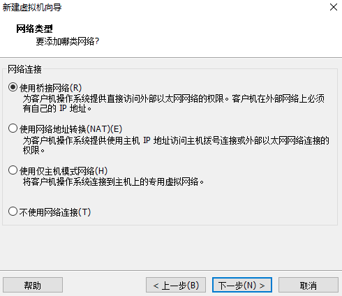
I/O控制器类型选择
LSI Logic
虚拟磁盘类型选择
SCSI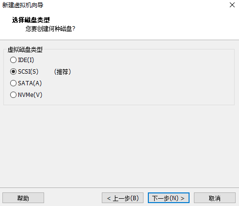
选择磁盘的时候，点击
使用现有虚拟磁盘，然后选择刚刚转换的vmdk文件。如果提示说可以转换为格式较新的虚拟磁盘，选择保持当前磁盘格式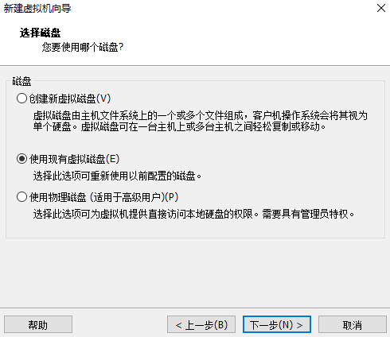
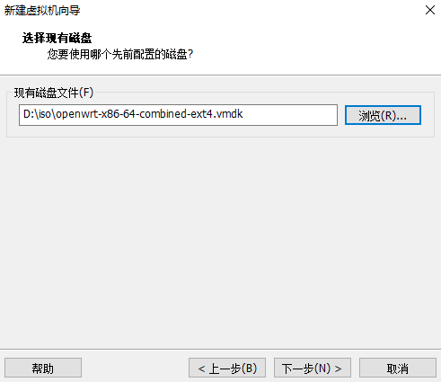
打开虚拟机所在位置，找到
xxx.vmx文件，使用文本编辑器打开，在最后一句加上ethernet0.virtualDev = "e1000"，保存文件这条语句将虚拟机的虚拟网卡类型设置为Intel e1000，Openwrt能够将其识别出来，如果想使用其他虚拟网卡类型，可以在编译配置的时候在
Kernel modules -> Network Devices中勾选其他网卡驱动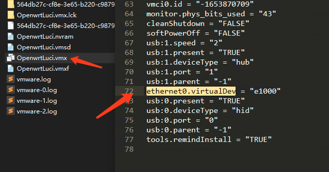
启动虚拟机，配置网络
启动虚拟机，屏幕上是不会显示命令行的，看到屏幕的日志不再滚动之后按回车就可以进入命令行了
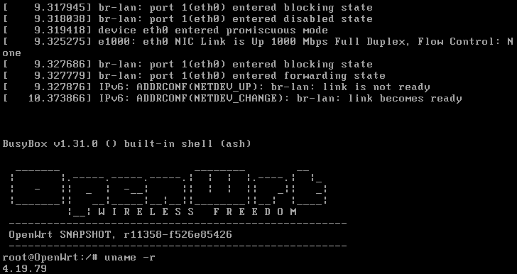
因为Openwrt默认的lan配置是只限于虚拟机本地网络的，因此还不能使用浏览器打开LuCi管理界面。需要修改一下lan网络配置
1 | vi /etc/config/network |
如果网络中的路由器有DHCP服务器，则将interface 'lan'改成如下所示
1 | config interface 'lan' |
如果网络中的路由器没有DHCP服务器，则自行指定：IP地址、子网掩码、默认网关、DNS服务器
1 | config interface 'lan' |
重启网络服务，查看是否获得IP地址，有IP地址就表示配置成功
1 | service network restart |
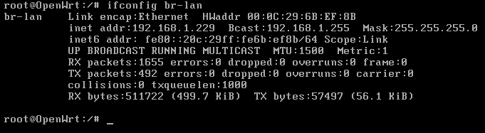
登录LuCi
在网络配置好之后，就可以打开浏览器，使用LuCi对路由器进行管理配置了。第一次登录的时候，Openwrt会要求设置root密码
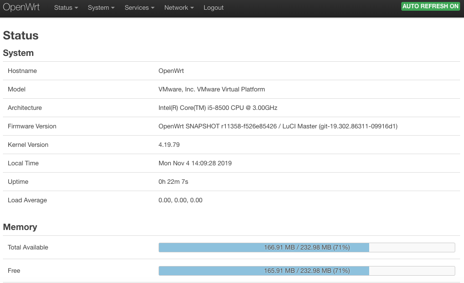
之后就可以愉快地玩耍了😁